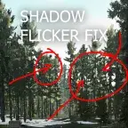

Mod
Shadow Flicker Fix
- Downloads
- 67,445
- Favourites
- 73
- Mod lists
- 184
Introduction
This mod fixes distant shadow flickering which was most noticeable with anti-aliasing disabled. Also includes options to configure some shadow-related variables, enable SMAA and configure TAA.
Performance
In testing I saw a very minimal performance impact, if at all. However, if you feel like your game is running worse then consider changing the Distant Shadow Resolution option in the config. Enabling shadow changes will most likely reduce FPS by some amount depending on the config.
Preview
Installation
Just drag and drop the BepInEx folder into your SPT folder.
Version
1.5.2
SPT ~4.0.0
Fika: unknown
24,012 downloads6.5 KB
- Recompiled for SPT 4.0.0
VirusTotal: report 1
Version
1.5.1
SPT ~3.11.0
Fika: unknown
11,789 downloadsUnknown size
- Fixed default values
VirusTotal: report 1
Version
1.4.0
SPT ~3.11.0
Fika: unknown
7,372 downloadsUnknown size
- Updated for SPT 3.11
- Separated regular and advanced shadow options
VirusTotal: report 1
Version
1.3.0
SPT ~3.10.0
Fika: unknown
5,726 downloadsUnknown size
- Updated to 3.10
- Added some optimizations so the game should no longer stutter and freeze when changing settings
- Changed the order of some config options
VirusTotal: report 1